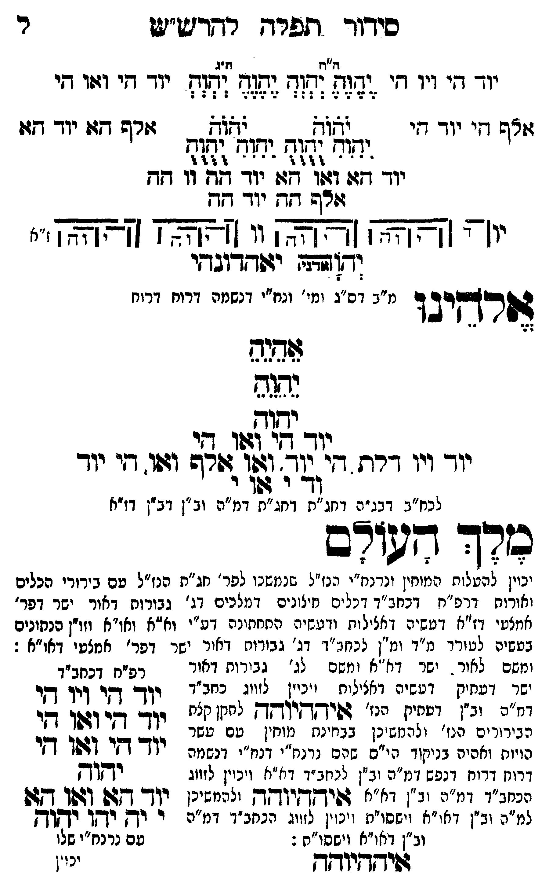

Neue Klartextfassung
=== טבלה === [טור ימין] יוד הי ויו הי אלף הי יוד הי [טור אמצעי] [ה"ח ה"ג] יֶהֶוֶהֶ יְהְוְהְ יֶהֶוֶהֶ יְהְוְהְ יֹהֹוֹהֹ יֹהֹוֹהֹ יִהִוִהִ יֻהֻוֻהֻ יִהִוִהִ יֻהֻוֻהֻ יוד הא ואו הא יוד הה וו הה אלף הה יוד הה [טור שמאל] יוד הי ואו הי אלף הא יוד הא === סוף טבלה === [תרשים: ארבעה צירופי יהוה בקווים אופקיים ואנכיים המחברים את האותיות. לצדי התרשים וי וי וי וי; ז"א.] יאהדונהי יהוה (אדני) אלהינו [מ"ב דס"ג ומי' ונח"י דנשמה דרוח דרוח] אֵהֵיֵהֵ יֵהֵוֵהֵ יהוה יוד הי ואו הי יוד ויו דלת הי יוד ואו אלף ואו הי יוד וד י או י [לכח"ב דבג"ה דחג"ת דחג"ת דמ"ה וב"ן דב"ן דז"א] מלך העולם [יכוין להעלות המוחין ונרנח"י הנז"ל שנמשכו לפר' חג"ת הנז"ל עם בירורי הכלים ואורות דרפ"ח דכחב"ד דכלים חיצונים דמלכים דג' גבורות דאור ישר דפר' אמצעי דז"א דעשיה דכללות ורביעיה התחתונה דע"י וא"א ואו"א וזו"ן הנתונים בעשיה להעלותם עם יחידה דנפש לעורר מ"ד ומ"ן לכחב"ד דג' גבורות דאור ישר דפר' אמצעי דאו"א:] [ומשם לאור ישר דא"א ומשם לג' גבורות דאור ישר דעתיק דעשיה דכללות ויכוין לזווג כחב"ד דמ"ה וב"ן דעתיק איההיוהה לתקן כלם הבירורים הנז' ולהמשיכן כבחינת מוחין עם עשר הויות וחלפי' בניקוד כ"ס שהם נרנח"י ורנח"י דיחידה דרוח דנפש דמ"ה וב"ן לכחב"ד דא"א ויכוין לזווג בכחב"ד דמ"ה וב"ן דא"א איההיוהה ולהמשיכן למ"ה וב"ן דאו"א וישסו"ת ויכוין לזווג הכחב"ד דמ"ה וב"ן דאו"א וישסו"ת:] === טבלה === [טור שמאל — רפ"ח דכחב"ד] יוד הי ויו הי יוד הי ואו הי יוד הי ואו הי יהוה יוד הא ואו הא [למ"ד לאבא] י יה יהו יהוה [למ"ן לאימא עם נרנח"י שלו] === סוף טבלה === איההיוהה
Original gegen neue OCR · Niqqud für Vergleich ausgeblendet
Original
=== טבלה === [טור ימין]K064-001 יוד הי ויו הי אלף היK064-002 יוד הי [טור אמצעי] [ה"ח ה"ג] יהוה יהוה יהוה יהוה יהוה יהוה יהוה יהוה יהוה יהוהK064-003 יוד הא ואו הא יוד ההK064-004 וו הה אלף הה יוד הה [טור שמאל] יוד הי ואו הי אלף הא יוד הא === סוף טבלה === [תרשים: ארבעה צירופי יהוה בקווים אופקיים ואנכיים המחברים את האותיות. לצדי התרשים וי וי וי וי; ז"א.] יאהדונהי יהוה (אדני) אלהינו [מ"בK064-005 דס"ג ומי' ונח"י דנשמה דרוח דרוח] אהיה יהוה יהוהK064-006 יוד הי ואו היK064-007 יוד ויו דלת הי יוד ואו אלף ואו הי יוד וד י או י [לכח"ב דבג"הK064-008 דחג"ת דחג"ת דמ"ה וב"ן דב"ן דז"א] מלך העולם [יכויןK064-009 להעלות המוחין ונרנח"יK064-010 הנז"ל שנמשכוK064-011 לפר' חג"ת הנז"ל עםK064-012 בירורי הכלים ואורותK064-013 דרפ"ח דכחב"ד דכלים חיצוניםK064-014 דמלכים דג'K064-015 גבורות דאור ישר דפר' אמצעי דז"א דעשיה דכללות ורביעיה התחתונה דע"יK064-016 וא"א ואו"א וזו"ן הנתונים בעשיה להעלותם עם יחידה דנפש לעוררK064-017 מ"ד ומ"ן לכחב"דK064-018 דג' גבורותK064-019 דאור ישר דפר' אמצעי דאו"א:] [ומשםK064-020 לאור ישר דא"אK064-021 ומשם לג' גבורותK064-022 דאור ∅K064-023 ישר דעתיק דעשיה דכללות ויכויןK064-024 לזווג כחב"ד דמ"הK064-025 וב"ן דעתיק איההיוהה לתקן כלם הבירוריםK064-026 הנז' ולהמשיכן כבחינת מוחין עםK064-027 עשר ∅K064-028 הויות וחלפי' בניקוד כ"ס שהם נרנח"י ורנח"י דיחידהK064-029 דרוח דנפש ∅K064-030 דמ"ה וב"ן לכחב"ד דא"א ויכוין לזווג בכחב"ד דמ"ה וב"ן דא"א איההיוהה ולהמשיכן למ"הK064-031 וב"ן דאו"א וישסו"ת ויכוין לזווג הכחב"ד דמ"ה וב"ן דאו"א וישסו"ת:] === טבלה === [טור שמאל — רפ"ח דכחב"ד] יוד הי ויו הי יוד הי ואו הי יוד הי ואו הי יהוה יוד הא ואו הא [למ"ד לאבא] י יה יהו יהוה [למ"ן לאימאK064-032 עם נרנח"י שלו] === סוף טבלה === איההיוההK064-033
OCR · fehlbar
סידור תפרד ר-דיש"ש ר ז"ח דג זד ד' וו ד' (דזול זד (:(ד (ז(ה -יד י וזו די יז ד[יK064-001 יוד זי לשלש זאל זרש דגוK064-002 יוד גזז: ישוח ([ח[זז וח ות[(ש - ז ו' ' :ליל ל - - ל - 4 ל 3 ידך דחד: ו6זו גזו: יוך- חון וו קח וודס חדזK064-003 יוד חדש יו' [זצצא [זצאאר]K064-004 וו [[צ[צצאץ [[אצצץ י" (דז[זדח יבשדדובךי מ"בK064-005 דס"ג ומי' ונח"י דנשמה דרוח דרוח צזרךיבו נהגם שעףK064-006 יוד דל (שו גנ יוך ויו דרת די 272 (אזי(זזדש וגפו. זיK064-007 יוד (ף ג ל) לכח"ב דבג"םK064-008 דחג"ת דחג"ת דמ"ה וב"ן דב"ן דז"א כודד ודב יכויןK064-009 להעלות המוחין ונרנז"יK064-010 הנז"ל שננזשנוK064-011 לפר' חג"ת הנז"ל טםK064-012 בירורי הכלים ואורוK064-013 דרפ"ח דכחב"ד דנלים נזיצוניםסK064-014 דמלכים ד: 'K064-015 גבורות דאור ישר דפר' אמצטי דז"י] (זטשיה דאצילות ודטשיח החחתונה דט"יK064-016 וא"א ואו"א וזוין סנחונים בטשיה לטורדK064-017 מ"ד ומ"ן ננחמג"דK064-018 דג' גבודוחK064-019 דאור ישר דפר' אמצעי. דאו"א : ומשםK064-020 לאור . יש דא זאK064-021 ומשם לג' זבירוחK064-022 דאור רפיח דכחב"דK064-023 ישר דטתיק דטשיה דאצילות (יכייןK064-024 לזווג נחנ"ד ין דקי ויך קי ד"הK064-025 וב"ן דטתיקK064-026 הנז' גניץדזייחק לחקן קגת לל[לל[ל0[לל רגירוריב נז' ילנזש בן בנייני ליח"ן (טםK064-027 עשר - ל [.K064-028 הויות ואהיה בניקוך לל ציזף (דנח"' דנז"צונצאנ יווך דזר [ז4ו דן דרווןK064-029 דרוח דנפש מ"ה יב"ן לניזב"ד די"א ויכוין לזוז יחוץ וכחזכ"ך דמ: ז"ן ונ וא פיךקךיוחך (ל(מ4בן טך ד8 1442 ו למ"ה (בין דאו"א וישסו"נ וינזין לזוג הכחב"-K064-030 דמ"ה ר ייךץ יךץך רקודK064-031 וב"ן דאו"א וישסו"ת :K064-032 עם נרנח"י שלו ((יד(דיוא- "י.K064-033